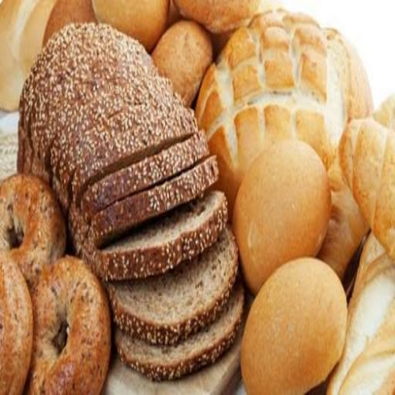
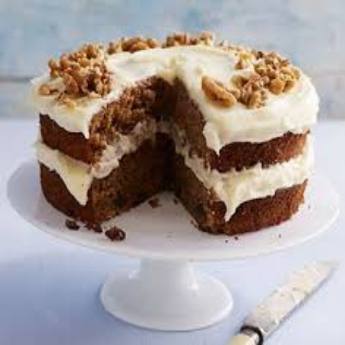
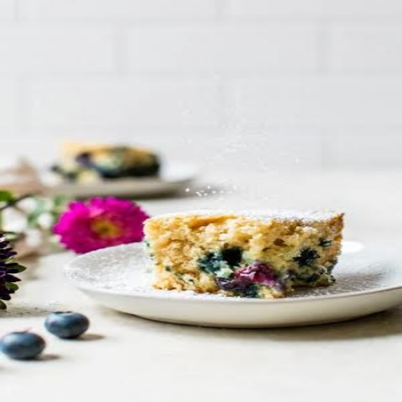

Meru Friends Sacco is located at Maua town, next to Maua Methodist hospital.
We are known for our healthy, Delicious and relatively cheap food products.
We bake Breads, popularly known Friendly Loaf, among many othe food staffs.
Select Products to explore through variety our our Products, containing the unique Red Sweet Potatoes



We freely deliver our products to our customers within Meru County.
If you own a business (shop) Select Make an Order below.
To buy our products online Select MFS Online Shopping.
You also can be a member of Friends Sacco by buying Shares. Click Buy shares below for more information.
To visit our offices see our Location or Select Visit us.
Why are we the Best??
You wonder why kids wake up to yelling "Bread" just after "mum/daddy".
Then you wonder why its so hard to convince them when you have no MFS bread/cake.
I also want to know why my kids know MFS Logo than that of ben10.
mmmh! let first talk of delicacy.
We hire the best Chefs to bake you the most delicious foodstaff.
Next is the energy and streagth of our products.
We make our final flour by mixing it with sweet potato flour (hard to find elsewhere), alongside many other ingredients and incredible spices.
You can click Products to see all ingredients and benefits of every specific product from our industry.
We also provide a daily supply making sure you always have fresh products.
We have always been the best and we are still working hard to be more.